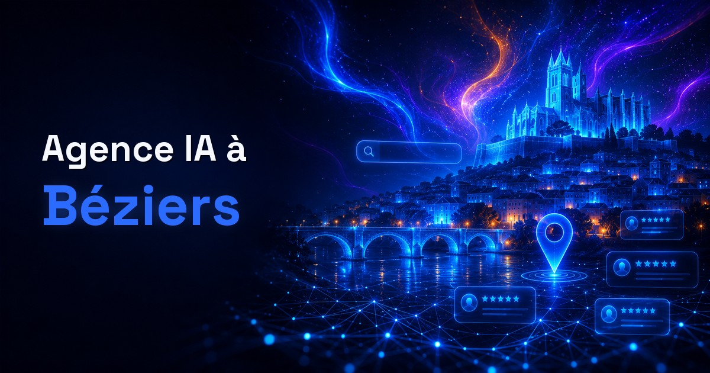

Un consultant IA proche des entreprises de Béziers
Fiducia IA accompagne les dirigeants et cadres de TPE/PME de Béziers et de son agglomération sur trois chantiers complémentaires : être trouvé sur Google et cité par les IA (ChatGPT, Perplexity, AI Overviews), disposer d'un site internet moderne et performant, et gagner du temps grâce à l'IA (formation des équipes, agents et automatisations). Le cabinet est établi à Montagnac (34530), dans l'Hérault, à une trentaine de minutes de Béziers par l'A9 : assez proche pour se déplacer, et parfaitement outillé pour travailler à distance quand c'est plus simple.
Béziers est la deuxième ville de l'Hérault après Montpellier, avec environ 81 500 habitants (recensement INSEE 2023), et le cœur d'une agglomération de 17 communes qui rassemble près de 133 000 habitants. Son tissu économique est en mouvement : selon l'observatoire économique de Béziers Méditerranée, le solde net des créations d'entreprises depuis 2019 est positif de près de 600 sociétés, porté avant tout par les services (+264) et l'industrie (+69). Dans un territoire où l'essentiel de l'activité repose sur des TPE et des indépendants, la visibilité en ligne et l'usage concret de l'IA ne sont plus des options pour se démarquer : ce sont des leviers de croissance.
Ce qui rend la fenêtre particulièrement ouverte à Béziers
Béziers n'est pas Montpellier, et c'est une bonne nouvelle pour qui s'y met maintenant. Le tissu local est fait de TPE, d'artisans et d'indépendants — des structures où le numérique passe après le métier, faute de temps plus que de volonté. Il en découle trois situations très concrètes :
- Le pack local se joue à peu de choses — sur une recherche « métier + Béziers », ce sont les trois fiches de la carte qui reçoivent les appels. Beaucoup de concurrents ont une fiche créée puis laissée en l'état : horaires jamais mis à jour, aucune photo, avis sans réponse. Une fiche Google Business Profile réellement tenue sort du lot en quelques semaines, pas en quelques années.
- L'écart se creuse vite quand personne ne bouge — quand la moitié des concurrents n'a pas de site, ou un site conçu il y a huit ans, il ne faut pas être excellent pour être devant : il faut être présent et à jour. C'est exactement le calcul qui rend une refonte rentable ici plus vite qu'ailleurs.
- Sur l'IA, le premier arrivé est le premier cité — quand un habitant demande à ChatGPT ou à Perplexity à quel professionnel s'adresser à Béziers, le moteur cite les quelques sites qu'il sait lire. Sur ce territoire, ils se comptent aujourd'hui sur les doigts d'une main : c'est le principe du référencement GEO.